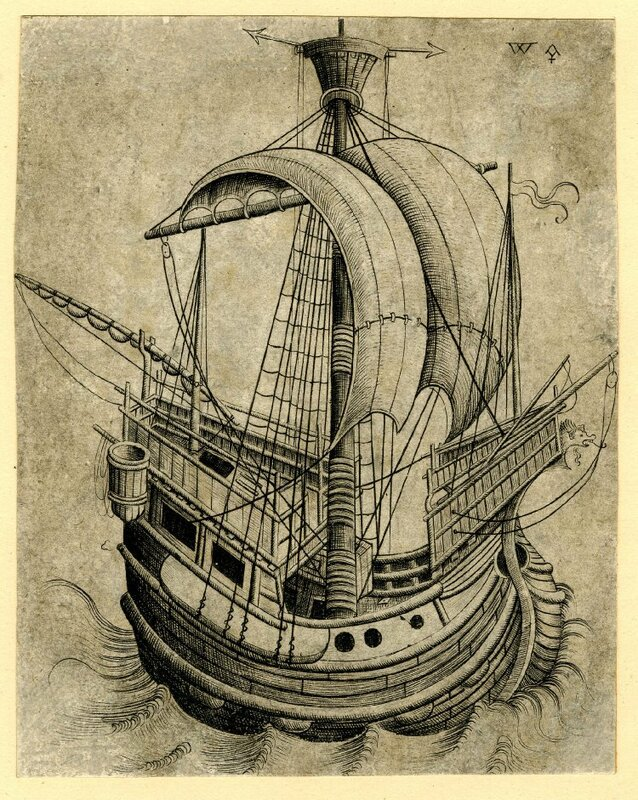

Ближе к корме, сразу за вантами и русленем, показан какой-то гаджет, напоминающий бочку без дна. Каково, по вашему мнению, назначение этого гаджета? Может быть известно, как он назывался?

Чтобы убедиться, что это не случайный элемент на парусных кораблях XIV-XV вв., под катом еще пару подобных изображений.
Кстати, слово «гаджет» здесь использовано не из-за стремления старого адмирала приобщиться к молодежному жаргону. Гаджет (gadget, gadjet) вполне себе термин морского языка. Он означал любую механическую деталь или часть корабля, название которой моряк не знал или попросту забыл. Произошло это слово морского сленга от французского gâchette. На русский можно переводить по всякому: и штуковина, и хреновина, и, по последней моде, хрень.

Обращенная копия с гравюры Мастера W с ключом (Israhel van Meckenem, 1475-1480).

Парусный корабль. Гравюра Мастера W с ключом (1465-1490)